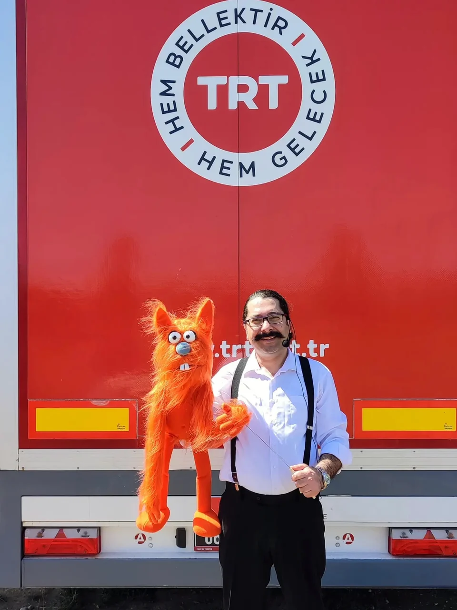
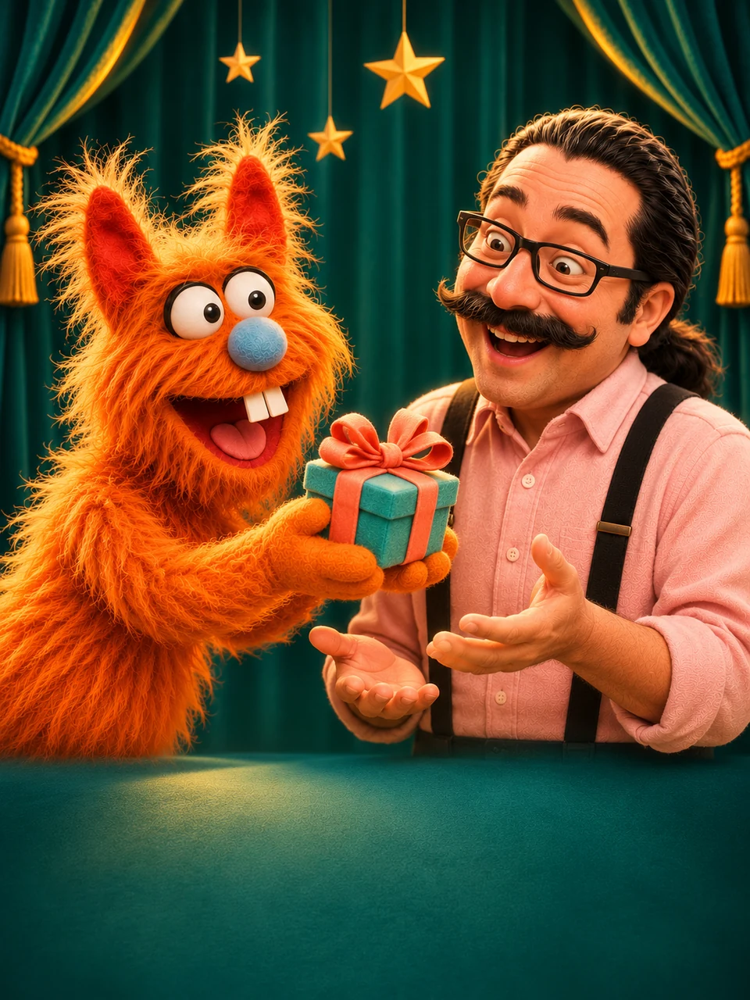
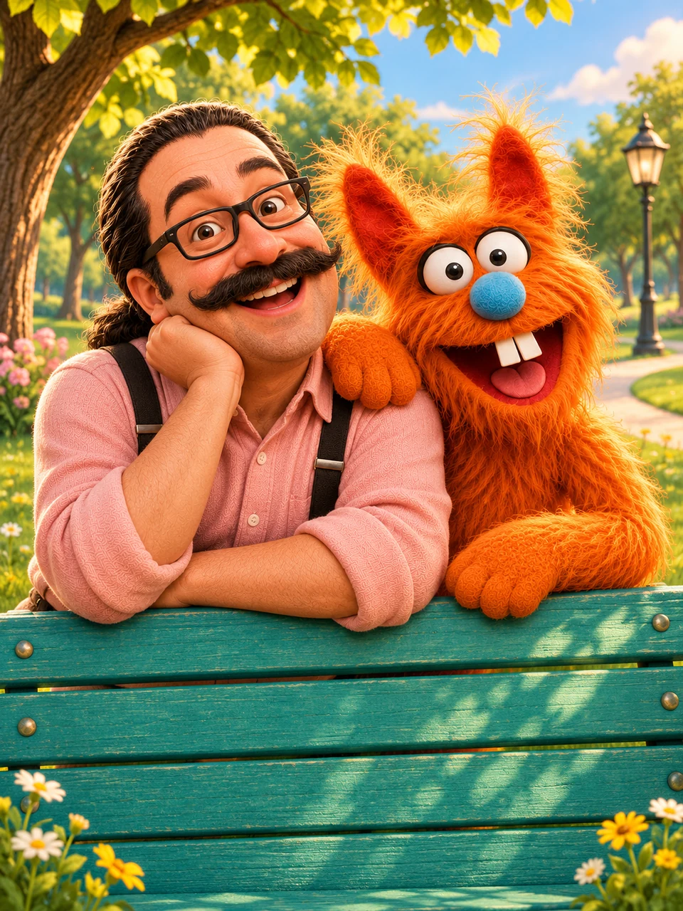
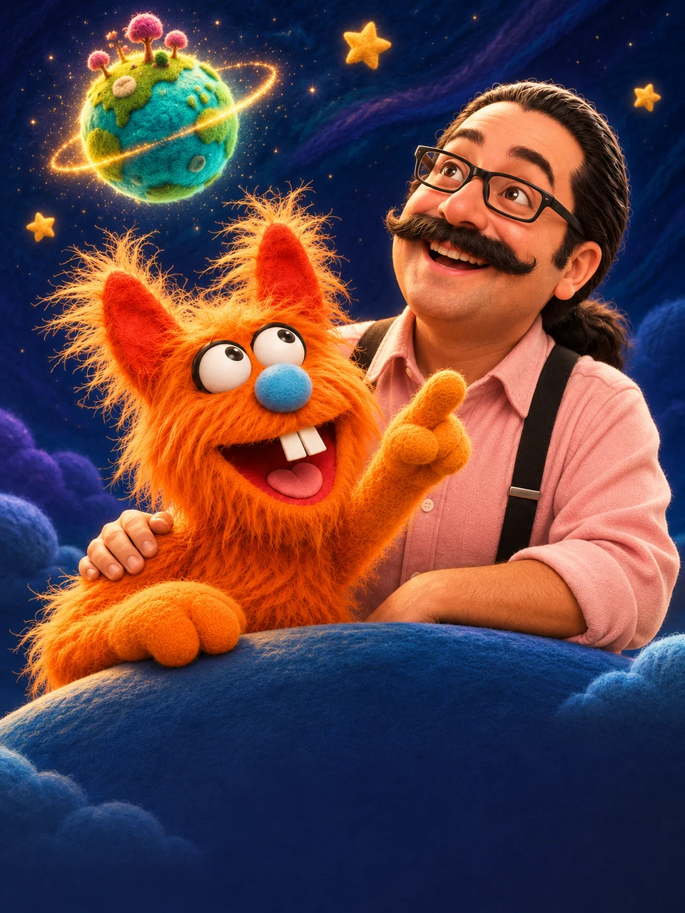
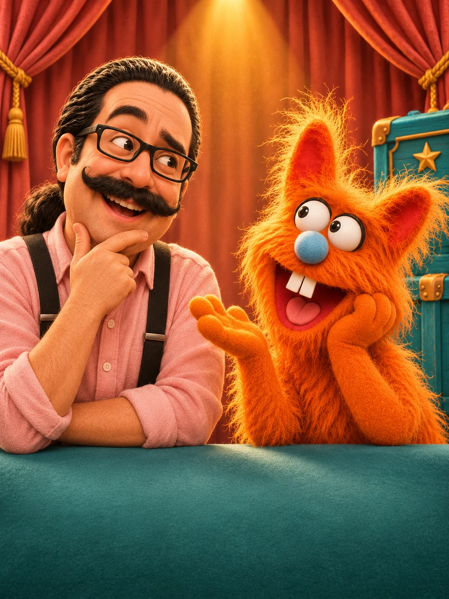
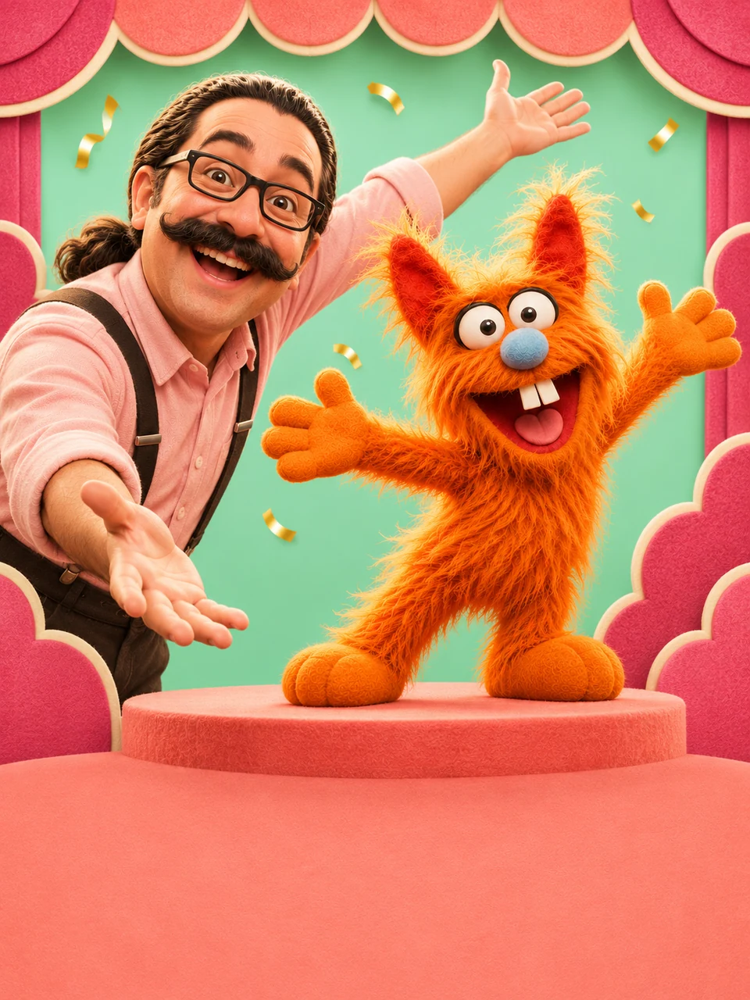
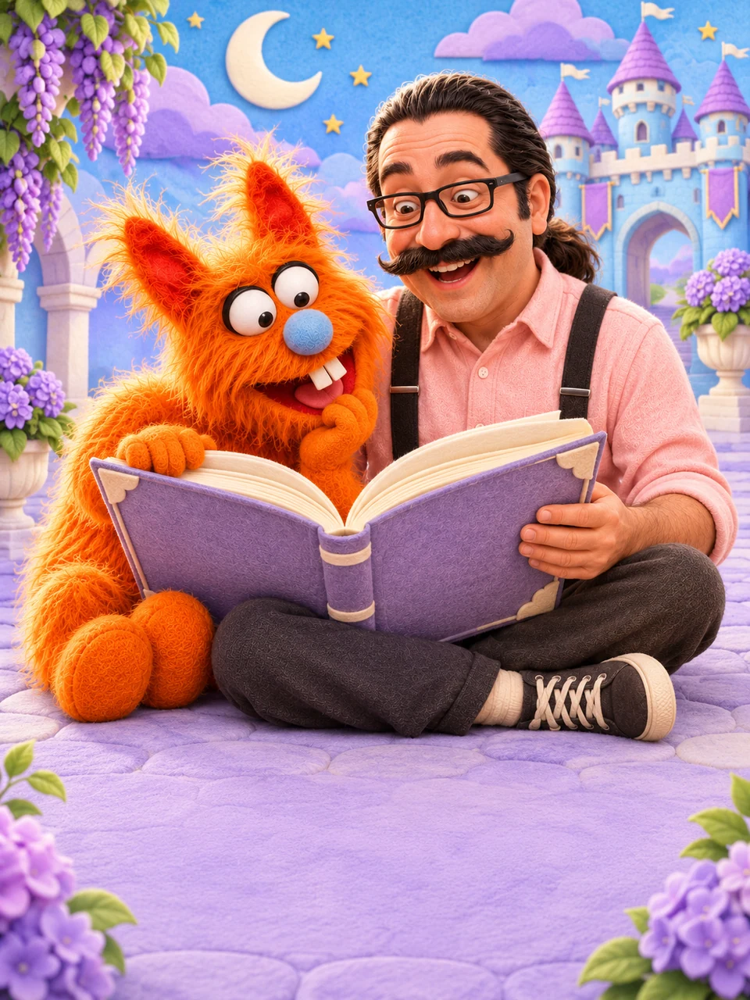

Okullar için
Anaokulu ve ilkokul etkinliklerinde Ali Abi ve Zoyo çocuklarla buluşsun.
Okul gösterisini inceleyinAli Abi ve Zoyo; okullarda, belediye etkinliklerinde ve çocuk şenliklerinde çocuklarla buluşuyor.
Zoyo’yu izleyinOkulda, kültür merkezinde, şenlikte…
Ali Abi ve Zoyo’yla gösteri zamanı.
Anaokulu ve ilkokul etkinliklerinde Ali Abi ve Zoyo çocuklarla buluşsun.
Okul gösterisini inceleyinKültür merkezlerinde ve çocuk şenliklerinde şehrin çocuklarıyla bir araya gelelim.
Belediye gösterisini inceleyinÇocukların bayramına, okul şenliğine ve özel etkinliğinize neşe katalım.
Özel günleri inceleyin
BüyütAli Cengiz, Zoyo’yu seslendiren ve oynatan bir kukla sanatçısı. Sahnedeki adıyla Ali Abi, çocuklarla canlı gösterilerde buluşuyor.
Turuncu tüyleri, mavi burnu ve merakıyla Zoyo; Ali Abi’nin sesi ve elleriyle sahnede canlanıyor.
Ali Abi ve Zoyo’yu tanıyınGösterilerden fotoğraflarOkullarda, salonlarda, şenliklerde…
Birlikte güldüğümüz buluşmalardan.
21 fotoğraf
YouTube ve Instagram’da neşeli anlar. İzlemek için bir kapak seçin.
Kapakları kaydırın, neşeye katılın.

YouTubekuklamukla TVZoyo’dan bir hikâyePaylaşmakYouTube’da izle
YouTubekuklamukla TVBen Zoyo · 2. bölümParktaki ÇocuklarYouTube’da izle
YouTubekuklamukla TVBen Zoyo · 1. bölümBüyük Z GezegeniYouTube’da izle
YouTubekuklamukla TVZoyo’dan bir hikâyeYalanYouTube’da izle
Instagramkuklamukla TVInstagram paylaşımlarıSahneden neşeli anlarInstagram’da aç
Instagramkuklamukla TVInstagram paylaşımlarıZoyo’nun dünyasına katılınInstagram’da açKapaklar sizi YouTube veya Instagram’a götürür.
Gösteriler hakkında merak ettikleriniz.
Tüm soruları görünZoyo’yu kukla sanatçısı Ali Cengiz seslendiriyor ve oynatıyor. Çocuklar onu sahnede Ali Abi olarak tanıyor.
Ali Abi ve Zoyo, Türkiye’nin 81 ilinde çocuklarla buluşabiliyor. Gösteriler hakkında ayrıntılı bilgi için Instagram hesabımızdan bize mesaj atın.
Evet. Anaokulları, ilkokullar, belediye etkinlikleri, kültür merkezleri ve çocuk şenlikleri için kukla gösterisi yapılabiliyor.
Ayrıntılı bilgi için Instagram hesabımızdan bize mesaj atın.
Ayrıntılı bilgi için Instagram hesabımızdan bize mesaj atın.